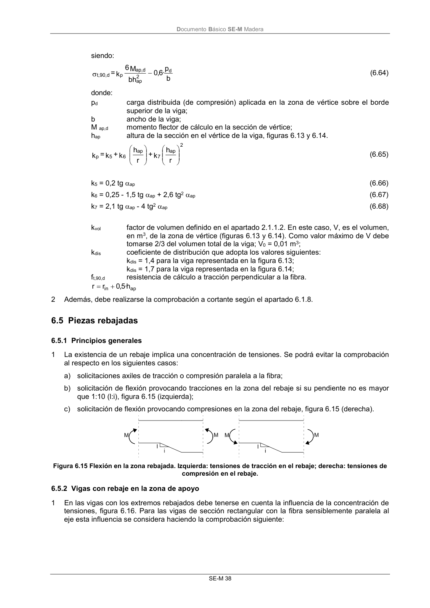

DB-SE-M Madera · edición 2019-12-20 · capa oficial
Documento DB-SE-M-oficial · SHA-256 del PDF 26b5819839ebfda78b0b119c5e76a0a37773b0d763c05688541870075df93718
Página física 44 de 132.
Copia fiel del PDF fuente · Fuente oficial
Ficha de la disposición en la fuente oficial
Formato: Texto de la página (Markdown)
Documento Básico SE-M Madera SE-M 38 siendo: b p · 6,0 bh M 6 k = d 2 ap d ap, p d t,90, (6.64) donde: pd carga distribuida (de compresión) aplicada en la zona de vértice sobre el borde superior de la viga; b ancho de la viga; M ap,d momento flector de cálculo en la sección de vértice; hap altura de la sección en el vértice de la viga, figuras 6.13 y 6.14. 2 ap 7 ap 6 5 p r h k + r h k + k = k (6.65) k5 = 0,2 tg ap (6.66) k6 = 0,25 - 1,5 tg ap + 2,6 tg2 ap (6.67) k7 = 2,1 tg ap - 4 tg2 ap (6.68) kvol factor de volumen definido en el apartado 2.1.1.2. En este caso, V, es el volumen, en m3, de la zona de vértice (figuras 6.13 y 6.14). Como valor máximo de V debe tomarse 2/3 del volumen total de la viga; V0 = 0,01 m3; kdis coeficiente de distribución que adopta los valores siguientes: kdis = 1,4 para la viga representada en la figura 6.13; kdis = 1,7 para la viga representada en la figura 6.14; ft,90,d resistencia de cálculo a tracción perpendicular a la fibra. ap in h· 5,0 r r 2 Además, debe realizarse la comprobación a cortante según el apartado 6.1.8. 6.5 Piezas rebajadas 6.5.1 Principios generales 1 La existencia de un rebaje implica una concentración de tensiones. Se podrá evitar la comprobación al respecto en los siguientes casos: a) solicitaciones axiles de tracción o compresión paralela a la fibra; b) solicitación de flexión provocando tracciones en la zona del rebaje si su pendiente no es mayor que 1:10 (l:i), figura 6.15 (izquierda); c) solicitación de flexión provocando compresiones en la zona del rebaje, figura 6.15 (derecha). Figura 6.15 Flexión en la zona rebajada. Izquierda: tensiones de tracción en el rebaje; derecha: tensiones de compresión en el rebaje. 6.5.2 Vigas con rebaje en la zona de apoyo 1 En las vigas con los extremos rebajados debe tenerse en cuenta la influencia de la concentración de tensiones, figura 6.16. Para las vigas de sección rectangular con la fibra sensiblemente paralela al eje esta influencia se considera haciendo la comprobación siguiente:
